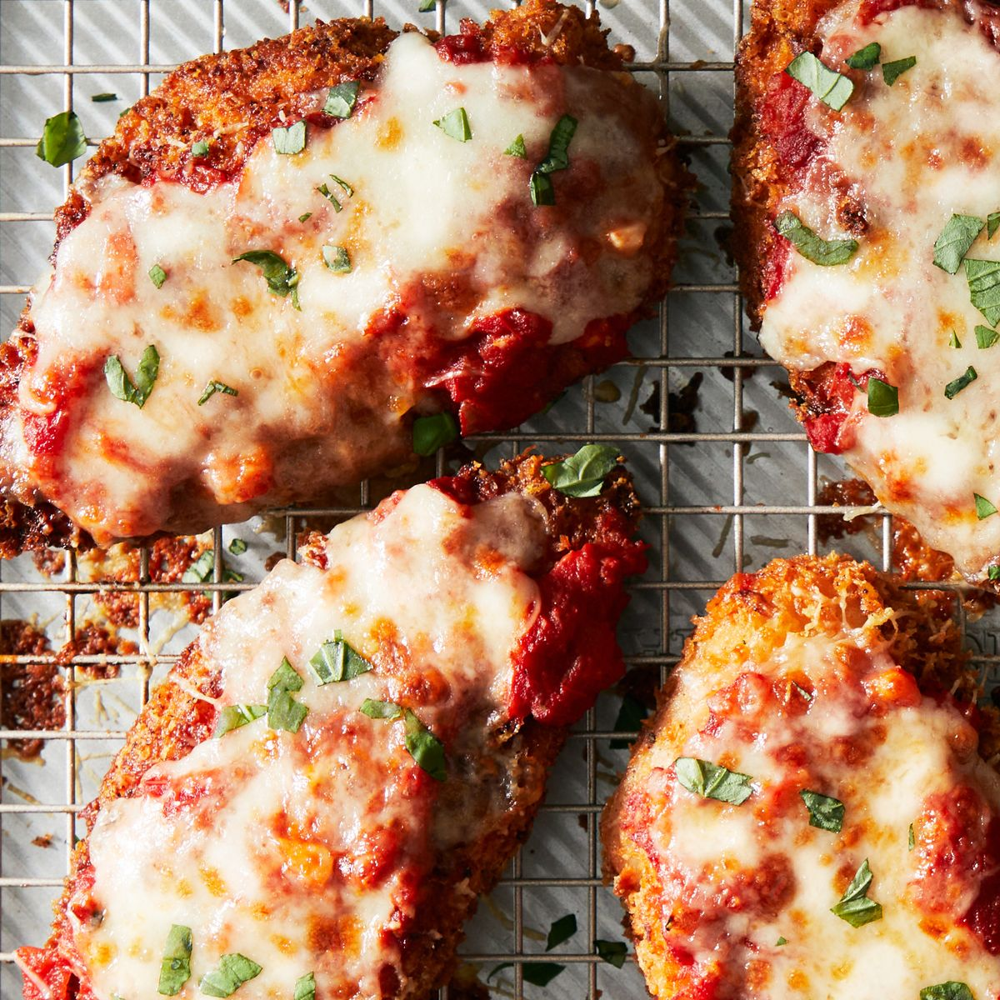

Chicken Parmesan

Description
While developing this recipe, I wondered: Why are we, citizens of the world, so obsessed with chicken Parmesan? After discussing with the food team, testing multiple variations, and summoning various Italian (-American) gods, I realized the reason is simple: It’s fatty, umami-licious, and has that perfect crispy AND melt-in-your-mouth texture. Though we’ve done it many different ways here (hi hello chicken nugget Parm casserole), this classic recipe is the chosen one, the holy grail. It has everything you want in chicken Parm, full stop—fried cutlets shrieking with crispiness, a perfect blend of mozzarella and Parm, and a sauce that is full of life with basil and just enough sweetness.
But, like any quest for greatness, you'll have to embark on your hero's journey to arrive at the perfect chicken Parmesan. Follow our tips, and you won’t even need a sidekick on the way there.
Note: The thickness of the chicken will determine how every bite tastes in the end product, so make sure those chicken cutlets are 1/4" thick, no exception.
Ingredients
Marinara Sauce
- 3 tbsp. extra-virgin olive oil
- 1 small yellow onion, finely chopped
- 6 cloves garlic, finely chopped
- 1 (28-oz.) can crushed tomatoes
- 2 large sprigs basil
- Kosher salt
- Freshly ground black pepper
Chicken
- 1 c. panko bread crumbs
- 1 tsp. garlic powder
- 2 c. finely grated Parmesan, divided
- 3/4 c. all-purpose flour
- 2 large eggs
- 6 (1/4"-thick) boneless, skinless chicken cutlets (about 1 1/2 lb. total)
- Kosher salt
- Freshly ground black pepper
- 1 c. shredded mozzarella
- 1 c. vegetable or canola oil
- Chopped fresh basil, for serving
Directions
Marinara Sauce
- In a medium pot over medium heat, heat oil. Add onion and garlic, stir to combine, and reduce heat to low. Cover and cook, stirring occasionally, 10 minutes. Uncover and cook, stirring occasionally, until onion is translucent and softened about 5 minutes more.
- Stir in tomatoes and basil. Bring to a boil, then reduce heat to medium-low and simmer, stirring occasionally, until slightly thickened and flavors have melded, about 30 minutes; season with salt and pepper. Discard basil.
Chicken
- In a shallow bowl, combine panko, garlic powder, and 1 cup Parmesan. Into another shallow bowl, pour flour. In a third shallow bowl, beat eggs with 1 tablespoon water.
- Pat chicken dry; season with salt and pepper. Dip into flour, shaking off excess, then into egg, then into panko mixture, gently pressing to adhere.
- In a small bowl, mix mozzarella and remaining 1 cup Parmesan.
- Heat broiler. In a large, heavy pot over medium heat, heat oil until a deep-fry or instant-read thermometer registers 350°; if it smokes a bit, that’s okay. Set a wire rack in a baking sheet.
- Working one at a time, fry chicken until one side is golden brown, about 1 minute. Flip and continue to fry until golden brown on the other side and the sound of the frying chicken gets slightly louder—this is the moisture evaporating from the chicken—about 1 minute more. Transfer to prepared rack. Repeat with remaining chicken. Spoon some marinara over chicken. Sprinkle with cheese mixture.
- Broil, watching carefully, until cheese is melted and brown spots form, about 2 minutes.
- Divide chicken among plates. Top with basil. Serve with remaining marinara alongside.
End of recipe! Take me home!